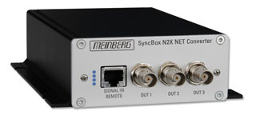

Устройство синхронизации SyncBox (для IEEE1588)

SyncBox – это генератор множества стандартных сигналов синхронизации для различного оборудования. Работает по протоколу IEEE1588 от внешнего сервера точного времени с первичными часами PTP.
{kind=link}
Описание SyncBox
SyncBox состоит из управляющего компьютера с ОС GNU/Linux, платы приема и обработки протокола PTPv2 (IEEE1588) и модуля выходных интерфейсов с высокостабильным собственным опорным генератором OCXO HQ.
Настройка устройства может быть выполнена дистанционно через web-интерфейс или через системный интерфейс RS232 по протоколу Telnet или SSH. Устройство обладает широкими возможностями в области безопасности в локальной сети.
Имеется поддержка интерфейса SNMP, что обеспечивает мониторинг всех системных параметров (включая параметры операционной системы, статистику сетевых интерфейсов и полную системную конфигурацию).
Технические характеристики SyncBox
- Вход: 10/100 Мбит/с RJ45, IEEE 1588 (PTPv2)
- Выходы: PPO (PPS, PPM, PPH, TC DCLS, DCF77 Marks), 10 МГц TTL

127322, Москва, ул. Яблочкова д.21, корп. 3, 3 этаж
Телефон/Факс: +7(495) 616-10-00